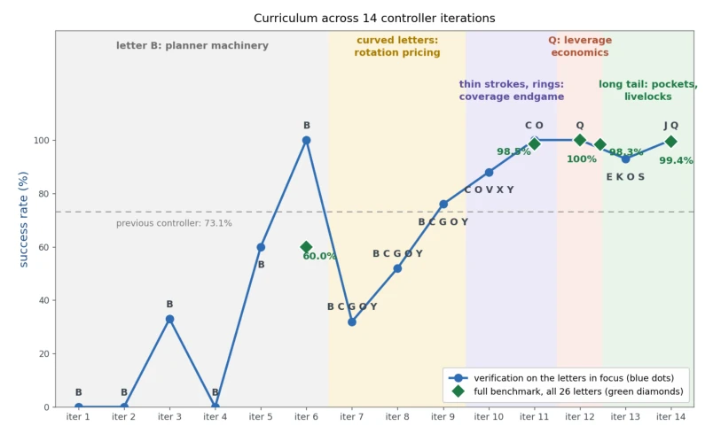
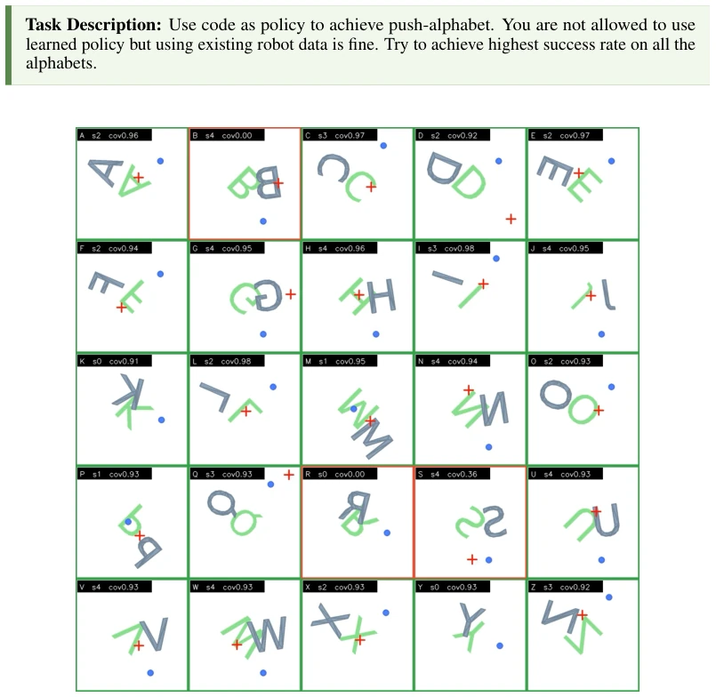
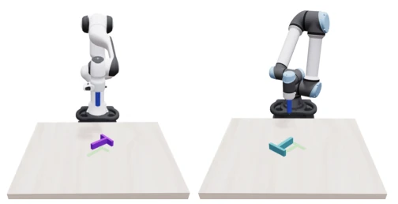
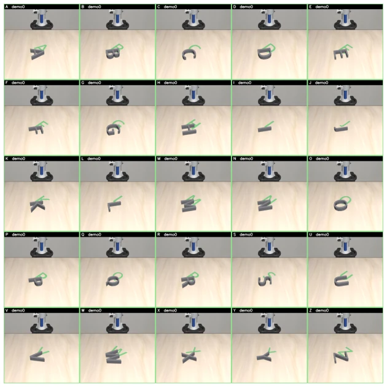

This paper is a veritable showcase of "Code as Policy": The LLM did not observe human demonstrations, relying solely on self-exploration within the simulation to elevate the classic Push-T task from a 62.5% success rate with diffusion policies to 100%, while also successfully pushing all 26 letters. This achievement is indeed impressive, demonstrating the potential of large models in geometric reasoning and self-evolution. However, do not celebrate too early; this is all "flowers in a greenhouse"—the physics engine within the simulator is flawless, and the LLM may have even exploited simulator API loopholes (such as directly reading state variables) to cheat. Once deployed on real hardware, facing friction coefficient drift, camera noise, and latency, can this "purely brain-based" controller withstand the challenges? Currently, it appears more like an algorithmic proof validated in an ideal sandbox, still a significant distance from the practical deployment of true embodied intelligence. Nevertheless, accomplishing complex geometric contact without human data is itself a powerful critique of the traditional imitation learning paradigm.
The Push-T task serves as the "fruit fly" of embodied AI, long relying on human demonstration data (e.g., Diffusion Policy [2]) or complex geometric modeling (e.g., CRISP [5], Dubins paths [4]). Existing methods have distinct pain points: imitation learning requires large quantities of expensive and difficult-to-obtain human demonstration data and suffers from poor generalization; traditional geometric methods, while theoretically elegant, find designing contact strategies and trajectory optimization extremely time-consuming and difficult to scale when facing non-convex, multi-contact complex shapes (such as letters A-Z). This paper aims to address the question: "Can an AI coding agent autonomously discover and optimize algorithms to solve Push-T and more complex Push-Alphabet tasks without relying on human demonstrations?" The authors question: If LLMs possess sufficient code generation and logical reasoning capabilities, can they directly construct controllers more efficient than those designed by human experts through a "trial-and-error" loop? This is not merely to solve Push-T, but to explore a new paradigm for Agentic Robotics in solving embodied tasks without data accumulation.
The overall process adopts a "Code as Policy" self-evolution closed loop. The system is driven by an LLM coding agent (Claude Code + Fable 5), executing a "generate-execute-evaluate-correct" iterative loop within the 2D Gym simulation environment. The pipeline is divided into three stages: First is initial strategy construction, where the agent searches the environment based on natural language instructions to generate a state-machine-based geometric controller (e.g., controller_v0), utilizing face normal push and eccentric push to decompose translation and rotation, and performing contact selection via quasi-static models; Second is perception loop enhancement, where the agent actively rewrites code to introduce a visual feedback module, recovering object pose from RGB images through color segmentation, template fitting, and IoU tracking, and calibrating friction parameters online; Finally is adaptive optimization, targeting Push-Alphabet tasks, where the agent employs a self-generated curriculum, starting from simple letters (e.g., B) and gradually increasing difficulty (e.g., C, G, O), using failure logs to diagnose kinematic errors and upgrading heuristic search to a Model Predictive Control (MPC) framework to automatically handle contact switching and boundary constraints. Throughout the entire process, the LLM does not enter the high-frequency control loop, only responsible for high-level logic generation and debugging.

Figure 2: Self-generated curriculum across 14 controller iterations in round v3. Blue dots are practice tests: after each code change, the agent runs 5 episodes on the letters it is currently struggling with (those letters are printed at each dot: B; then B C G O Y; then C O V X Y; then Q; E K O S; J Q). The line dips whenever a new, harder group of letters enters the curriculum—iteration 7’s crash to 32% is not the controller getting worse but the test switching from “just B” to five curved letters. Green diamonds are exams on all 26 letters: 60.0% →98.5% →100% (5 tries per letter), then 98.3% →99.4% (25 tries per letter, the strict final number).
Experiments were conducted in 2D Gym simulation, comparing LeRobot Diffusion Policy (based on 200 human demonstrations) with agent-generated controllers. On the Push-T task, the agent-generated state controller achieved a 100% success rate, with average steps (120.1) and push counts (3.72) significantly outperforming the diffusion policy (62.5% success rate, 223.7 steps, 6.38 pushes). After introducing visual feedback, the success rate remained as high as 97.2%. In the extended Push-Alphabet task, the agent improved the success rate from 47.1% to 99.4% through three rounds of self-evolution, far exceeding the classic baseline based on Dubins paths (90.2% success rate). Additionally, the agent successfully transferred the policy to 3D simulations of two different robotic arms, Franka and UR5e, achieving success rates of 89.8% and 98.5% respectively. Ablation experiments show that the MPC framework outperforms fixed contact models in complex geometric handling, and the agent can autonomously discover and fix torque lever issues for specific letters (e.g., Q).

Figure 1: The agent-written Push A–Z benchmark in the 2D gym. Each tile shows the goal letter pose (green), the block (gray), and the pusher (blue dot); headers give the letter, seed, and final coverage. Red frames mark failures of the pre-MPC baseline controller (B and R at coverage 0.00, S at 0.36), which motivated the self-improvement rounds below.

Figure 3: Franka Panda (left) and UR5e (right) pushing a letter in simulation.

Figure 4: Push A–Z ported to simulation with a Franka arm (one tile per letter; goal letter pose in green).